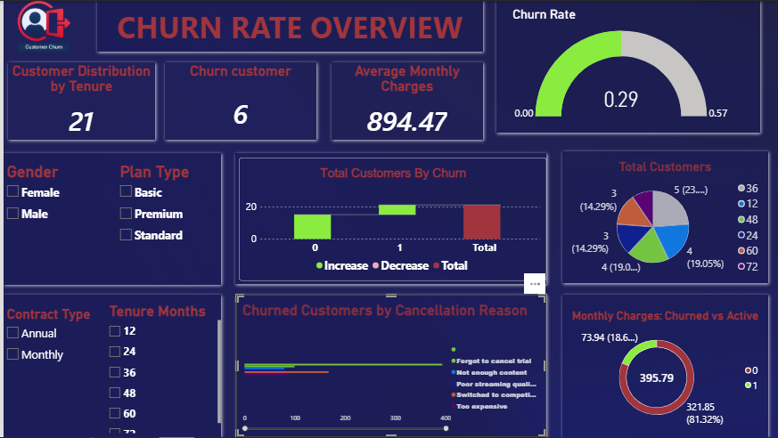
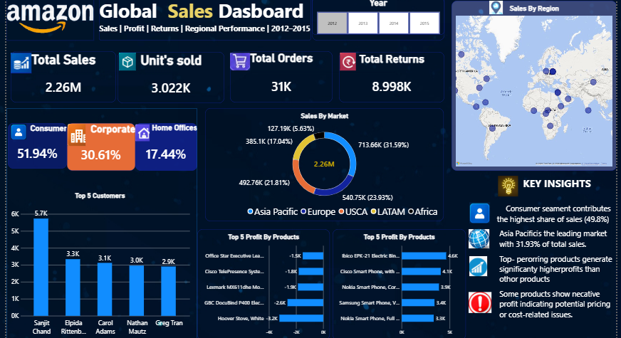
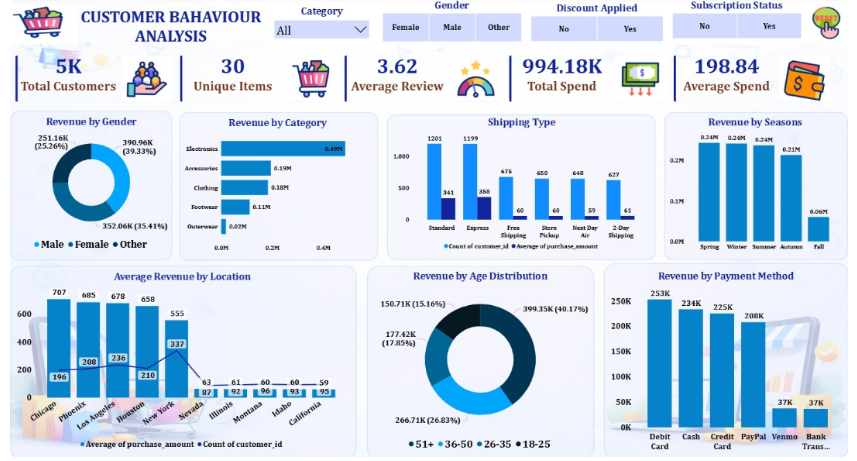
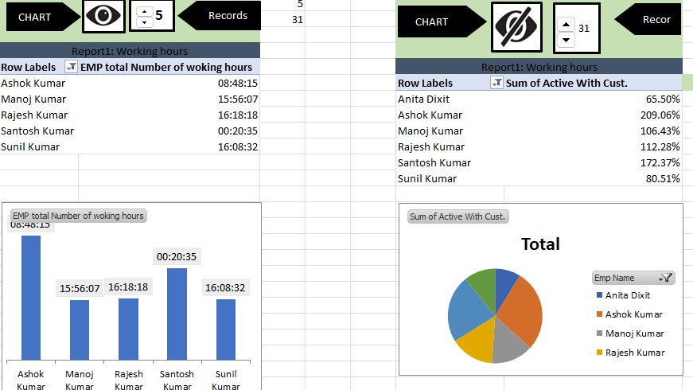
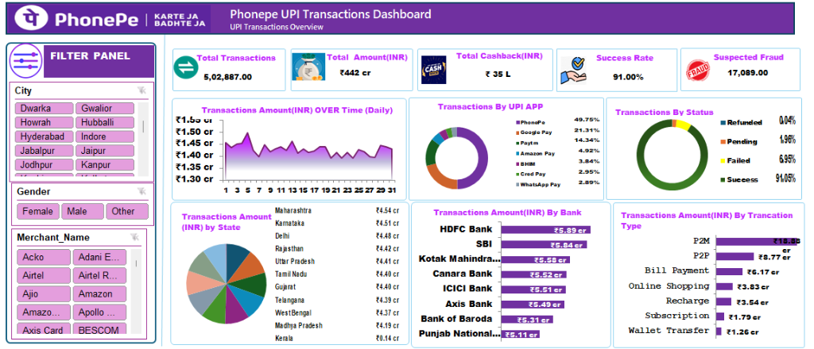

★ Featured — Professional Experience
15+ Hours
Saved Weekly
Cisco TAC CSAT Dashboard
Tableau • SQL • Snowflake • Excel
Business Problem: The Global CX Strategy & Planning team relied on manual Excel-based reporting for TAC Customer Satisfaction (CSAT) metrics, which was time-consuming and error-prone.
Analysis & Approach:
- Queried and processed 5,000+ operational records from Snowflake using SQL (Joins, CTEs, Aggregations).
- Performed data cleaning, validation, and quality checks before dashboard development.
- Built self-service Tableau dashboards for CSAT and response-rate analysis.
- Enabled 4–5 key stakeholders to independently track and monitor satisfaction metrics in real-time.
Business Impact: Replaced manual data extraction with automated Tableau reporting, saving 15+ hours per week and eliminating reporting errors. Stakeholders gained real-time visibility into CSAT trends for faster decision-making.
Sanitized corporate case study (Confidential data)
★ Featured

Customer Churn Analysis
Python • SQL • Pandas • NumPy • SQLite • Matplotlib • Seaborn
Business Problem: Understanding which customer segments and behaviors are associated with higher churn risk, enabling targeted retention strategies.
Analysis & Approach:
- Cleaned and prepared customer subscription, support interaction, and billing data.
- Used SQL to extract and aggregate customer-level metrics (tenure, charges, complaints, CSAT scores).
- Performed exploratory data analysis to examine relationships between customer behavior and churn indicators.
- Identified customer segments with significantly higher churn risk based on subscription type and complaint patterns.
Key Insights: Customers with month-to-month contracts and high complaint frequency showed the strongest association with churn. Short-tenure customers with premium plans exhibited higher attrition risk.
↗ View on GitHub
★ Featured

Amazon Global Sales Dashboard
Power BI • Excel
Business Problem: Analyzing global e-commerce sales data to understand regional performance, customer segments, product profitability, and return patterns to support business strategy.
Analysis & Approach:
- Analyzed sales performance, order volume, and revenue contribution across regions and markets.
- Compared customer segment contribution (Consumer, Corporate, Home Office) and product-category performance.
- Examined profit margins to identify products and categories with negative or low profitability.
- Built an interactive Power BI dashboard with KPI cards, regional heat maps, and product-level drill-downs.
Key Insights: Identified specific product sub-categories contributing to negative margins. Consumer segment drove highest order volume but Corporate segment showed better per-order profitability.
↗ View on GitHub

Customer Behavior Analysis
Python • SQL • Power BI
Business Problem: Understanding customer purchasing patterns and segmentation to identify factors associated with higher spending.
- Performed data cleaning, exploratory analysis, and customer segmentation using Python and SQL.
- Analyzed purchasing behavior across demographics, product categories, and time periods.
- Built an interactive Power BI dashboard to present key findings to stakeholders.
↗ View on GitHub

Employee Performance Dashboard
Microsoft Excel
Business Problem: Monitoring employee performance, working hours, efficiency, and break patterns for workforce management.
- Used Pivot Tables, Pivot Charts, and Slicers for interactive analysis.
- Applied Excel formulas (SUM, AVERAGE, IF) for performance calculations.
- Designed an interactive dashboard for quick performance monitoring.
↗ View on GitHub

PhonePe UPI Analysis
Python • Pandas • Matplotlib
Business Problem: Analyzing UPI transaction data to understand volume trends, geographic distribution, and payment patterns.
- Cleaned and explored transaction-level data across periods and locations.
- Identified major transaction trends and regional patterns.
- Created clear visualizations to communicate findings.
↗ View on GitHub
University Admission Prediction
Python • Pandas • NumPy • Scikit-learn
Business Problem: Predicting university admission likelihood using applicant-level academic data.
- Performed data preprocessing and exploratory data analysis.
- Applied feature engineering and cross-validation techniques.
- Built a machine-learning model to predict admission outcomes.
↗ View on GitHub